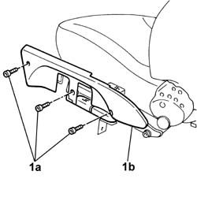
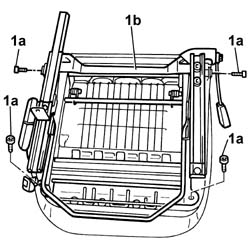
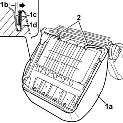
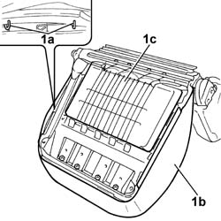
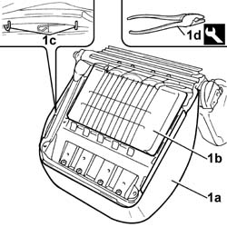
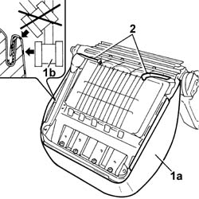

7045A16 HOOK securing folding cushion of a front seat (one), left or right - R.R .
- Path
- Procedures > 70 FITTINGS > 7045 FRONT SEATS > 7045A front seat assembly > 7045A16 HOOK securing folding cushion of a front seat (one), left or right - R.R .
- Kind
- repair procedure (removal / refitting; the operation number is the code)
- Applies to
- all engines; all production periods
- Interactive page
- https://sloeber94.github.io/elrnDB-fDbl/en/#/2585164
Applies to: all engines; all production periods
 Removing
Removing
 Refitting
Refitting1. Undo the bolts (1a) and remove the side trim (1b).

Applies to: all engines; all production periods
1. Undo the fixing bolts (1a) and remove the support (1b) complete with guide and slide control lever.

Applies to: all engines; all production periods
1. Remove the whole perimeter of the cover (1a); use a normal screwdriver with blade of suitable size (1b) to open the groove (1c) and release the trim profile (1d).
2. Release retaining cables.

Applies to: all engines; all production periods
1. Break the hooks (1a) to detach the cover (1b) from the cushion padding (1c).

Applies to: all engines; all production periods
Refitting
RemovingCheck that the padding and trim are not damaged.
If they are, replace the damaged part.
Fit the cover on the padding.
1. Secure trim (1a) to the cushion padding (1b) using new hooks (1c) with the aid of tool (1d).
 | Name | Country |
|---|---|---|
1d | Pliers for metal points | 1.878.017.001 |

Applies to: all engines; all production periods
1. Fit the edge of trim (1a) in its seat and tap into the channel using a rubber mallet (1b).
2. Secure the retaining cables.

Applies to: all engines; all production periods
Position the mount complete with guide and slide control lever and tighten the bolts.
Position the side cover and secure it using the bolts.